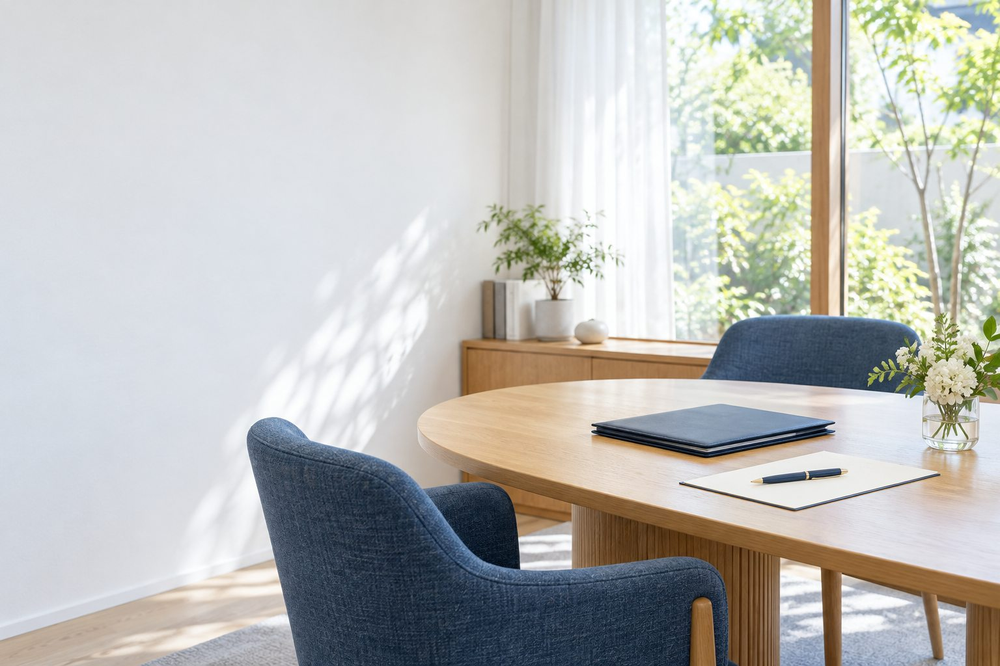

情報を整理する
いま気になっていることを、ひとつずつ言葉にする入口です。
この内容で見てみる →
01 はじめての方へ
「まだ、何を聞けばよいかわからない」。そんな段階から、気になることを順番に。ご本人のペースで読める、迷わず次へ進める案内を目指しました。
ここで紹介する内容は、サイトの構成を確認するための仮のサービスです。実際の業務・料金・資格・対応範囲は掲載していません。
02 できること
いま気になっていることを、ひとつずつ言葉にする入口です。
この内容で見てみる →相談までに確認しておくことを、順番に見る入口です。
この内容で見てみる →内容が決まっていなくても、案内から確認する入口です。
この内容で見てみる →03 ご利用の流れ
ぴったり当てはまらなくても大丈夫です。
対応範囲・費用・方法を確認してから進めます。
これは仮の流れです。正式な案内は原稿に合わせて整えます。
04 お知らせ
気になる内容を選ぶと、相談の入口をご覧いただけます。こちらは更新操作を確認するための仮のお知らせです。
05 よくある質問
この制作例では「まず話を聞きたい」を選べます。実際の受付条件は、ご支給いただく原稿に合わせて掲載します。
スマートフォンでも読む順番が変わらない構成です。上部の「文字を大きく」で文字サイズを変更できます。
いいえ。これは架空の提案用デモです。相談内容の選択と確認までを体験でき、外部への送信や予約は行いません。
06 相談の入口
個人情報を入力せずに、画面の流れを体験できます。
このデモはここまでです。送信・予約・料金の発生はありません。
ここからは、制作の仕組みのご説明です
お知らせの見出し・本文を変更して、反映を体験できます。この画面はブラウザ内だけの見本で、WordPressやサーバー保存には接続していません。
正式制作ではWordPressの編集画面を使用します。本デモは静的HTMLです。解析・メール送信・予約・CMSは未接続。再読み込みすると見本に戻ります。